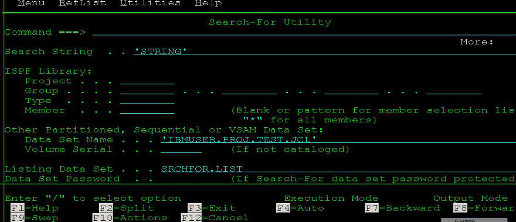

JCL提交REXX脚本
来说说如何用JCL提交REXX脚本。
1、写一个最简单的显示有一行提示的REXX脚本叫SAYHELLO：
1 EDIT IBMUSER.REXX.EXEC(SAYHELLO) - 01.00 Member SAYHELLO saved
2 Command ===> Scroll ===> CSR
3 ****** ***************************** Top of Data ******************************
4 000001 /******************************REXX*********************************/
5 000002 SAY "I WILL PRINT 'HELLO' IN SYSTSPRT BY SUBMITTING JCL"
2、写一个JCL如下IBMUSER.TEST.JCL(SAYHELLO):
EDIT IBMUSER.TEST.JCL(SAYHELLO) - 01 ...REXX怎么保存"Find ALL"的结果
最近的项目经常跟MQ打交道,将输入数据填在一个dataset里面提交给MQ解析，字段之间用逗号隔开。所以在测试MQ接口的时候会经常一边对着FSD文档，一边数dataset里面的逗号个数的情况。数多了就烦了。其实到今天才想起来可以用一个"FIND ALL"的ISPF命令。
FIND ',' ALL
这样，逗号的个数就不用数了，直接显示在屏幕右上角。
既然这样，利用REXX应该可以保存这个“FIND ',' ALL'的结果。 研究了一下，可以这样:
编辑IBMUSER.REXX.EXEC(CHECK)这个member,输入如下的macro：
1 ADDRESS ISPEXEC
2 "ISREDIT SEEK ALL ','"
3 "ISREDIT (COUNT) = SEEK_COUNTS"
4 SAY "Comma number: "!! COUNT !! "'!'"
5 EXIT 0
打开MQ的DATASET，比如 ...
more ...Rexx顺序处理文件所有行
这是典型的自上而下扫描一个dataset中每一行,而做相应处理的Rexx脚本,几乎所有的处理文件I/O的Rexx脚本都会涉及到：
ADDRESS TSO
indataset = 'IBMUSER.REXX.EXEC(INFILE)' /*read in input file */
"alloc f(fin) ds('"indataset"') shr reuse"
"execio * diskr fin (finis stem in."
"free f(fin)"
do i=1 to in.0 /*loop in file until the last line reached */
one_line = strip(in.i)
call ...ISPF下如何去掉程序的第72至80列
个人不是很喜欢ISPF 3.13提供的两个Dataset比较的功能，总觉得看得不是很直观。平时还是比较习惯用windows下面的winmerge这个软件来比较。但是有个问题，就是比较的两个程序经常在第72列至80列的行号不一致，导致没法比较。所以这里就来总结一下如何去掉DATASET的中烦人的第72列至80列内容。
方法一：直接在ISPF下面用命令去掉
这是最直接最快的办法。去掉第72列至80列的命令有下面两个：
NUM ON; UNNUMB
C P'^' ’ ’ 73 80 ALL /* Changes all non-space characters to spaces in col 73 to 80*/
方法二：用第三方脚本实现
上面的方法如果是只有少数几个程序，那么手动命令去掉第72列至80列没什么。但是如果你一下子需要对几百个dataset或者同一个PDS下面的所有member去掉第72列至80列，则最好最快的办法是将所有代码通过FTP下载到本地，然后用第三方脚本语言(如VB,Phthon,Ruby,JS等)来解决。
这里是一段自己的Ruby脚本，作用是将C:\prod ...
REXX学习笔记
最近在学习Rexx脚本，打算做一些自动化。归纳了些点总结下放在这里以备查询。
一些基本概念
- REXX:
REstructured eXtended eXecutor (REXX) language扩充结构化执行语言 - REXX中变量无需事前定义
- Debug REXX:用REXX TRACE或者用interactive debug facility来定位error
- SAA Procedures Language：REXX的子集，在TSO/E,CICS,IMS等多种环境中应用
- 要运行REXX exec，必须至少有一种可用的
Host command environments。默认的是TSO。还有MVS,LINK,LINKMVS,LINKPGM,ATTACH,ATTCHMVS,ATTCHPGM,ISPEXEC,ISREDIT,CONSOLE,CPICOMM,LU62,APPCMVS等等，常用的有 ...
PL/I编译器版本
PL/I编译器的版本，如下所示：
Product Product name Compiler "signature" Module prefix
360S-NL-511 S/360 OS PL/1 (F) ' ' IEM,IHE,IHL
5734-PL1 OS PL/I OPTIMIZING COMPILER V1 5734-PL1 IEL,IBM
5734-PL2 OS PL/I CHECKOUT COMPILER
5734-PL3 OS PL/I Opt Comp Lib ...用PIC型中间变量解决Fixed赋值溢出abend
我在Debug一个PLI程序PRGM000的时候遇到了一个CEE34A abend，报的错误信息如下：
more ...You were prompted because the CEE34A condition was raised in your program. CEE34A is a severity or class 3 condition. The operating system has generated the following message: CEE3210S The system detected a decimal-overflow exception (System Completion Code=0CA). The current location is PRGM000 ...
利用SRCHFOR在PDS中搜索字符串
之前的文章说到了一个叫Mem xxx 的命令可以用来在一系列PDS中搜索一个名字叫做xxx的member，今天我来说下如何在一个PDS里面所有的member内容当中搜索特定字符串。其实就是利用search-for 的应用程序，比较常规的方法是道ISPF的3.14菜单里面搜索，如下图所示，就是在 "IBMUSER.PROJ.TEST.JCL"这个PDS里面所有的member内容中，搜索一个叫"STRING"的字符串：

当然，如果你想直接在当前PDS下调用search-for utility来搜索特定字符串，可以在command line上输入命令：
SRCHFOR "STRING"
来在当前PDS下面搜索字符串”STRING“,具体如下面2张截图所示：


如果想同时在多个PDS当中搜索一个字符串，或者多个字符串那么该如何做呢？这时你可能就需要用到JCL来调用ISRSUPC这个utility了。这个ISRSUPC的功能可强大多了，具体可以参照下我之前的文章: <<用ISRSUPC在PDS所有member中搜索指定字符串>>，这里不重复了。
美国50个州中英文[带音标]
序号 州名 简称 首府名
01. Alabama ,ælə’bæmə – AL– Montgomery mənt’gʌməri
02. Alaska ə’læskə – AK– Juneau ‘dʒu:nəu
03. Arizona [æri’zəunə] (亚利桑那) – AZ– Phoenix ‘fi:niks
04. Arkansas ‘ɑ:kənsɔ: – AR– Little rock(小石城)
05. California ,kæli’fɔ:njə – CA– Sacramento ,sækrə’mentəu
06. Colorado ,kʌlə’rɑ ...
Watir自动为优酷视频刷顶
很喜欢优酷上面的一个节目，想帮帮它早日升到排行榜怎么办？写个脚本好了。
#encoding: UTF-8 #添加这一行才可以处理中文
require 'rubygems' #gem install xxx --no-ri --no-rdoc
require 'timeout'
require 'watir-webdriver'
b = Watir::Browser.new(:firefox, {:profile => 'default'})
b.driver.manage.timeouts.implicit_wait =60 #默认的等待页面加载30秒若还未加载完成则会跑出timeout异常，这里可以修改成60秒
b.goto 'http://v.youku.com/v_show/id_XNTE5MTY3NzI4.html' #假设我现在要为这个视频刷“顶”
for i in 1..100 #假设我这里要"顶 ...